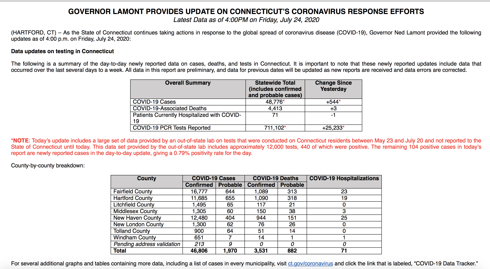
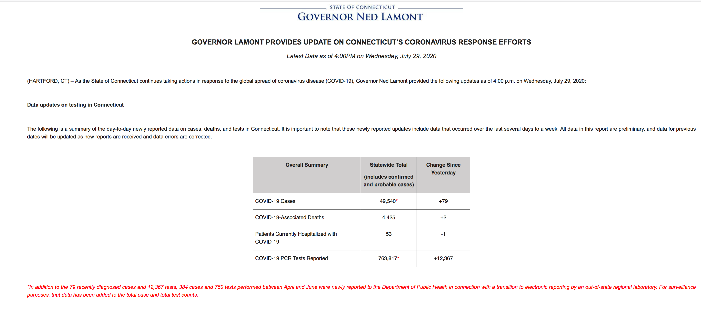

[CT]Back-fill data added in the last 7 days that reflects cases (& tests?)
Issue number 721
muamichali opened this issue on July 31, 2020 at 9:20 pm
Labels Data quality not stale
State or US: CT
Describe the problem CT had two dumps of old test results from Enzo Labs, an out of state lab that just submitted their results to CT in two batches in the past 7 days. These data date back to April, but because they were dumped into CT totals now
Specifically this catch up data included 440 cases reported last Friday + 384 Wednesday = 824 cases that should be removed from our recent totals to better reflect recent trends.
Link to data source 
Comments
Based on our meeting yesterday, I would say that this backfill would not meet the mixery-exception bar. (because it’s not a new column where we’re bootstrapping old history)
So, I would like to close this “won’t fix”. If CT puts pressure on us, that pressure should go towards adding a new column with approprirate “by date” assignment. I’ve started a slack conversation to get consensus.
There was some more discussion about just giving CT a new column (similar to RI and CO) instead of this. More to come.
This issue has been automatically marked as stale because it has not had recent activity. It will be closed if no further activity occurs. Thank you for your contributions!
Does not meet the mixery-exception bar.
@muamichali CT provides two time series for confirmed cases: positive cases by dashboard time and positive cases by specimen collection time. The former matches what we already have and includes the July 24 jump, the latter smooths that out but would result in mixing. I don’t think there’s much we can do until we have a “state revised time series” strategy in place.